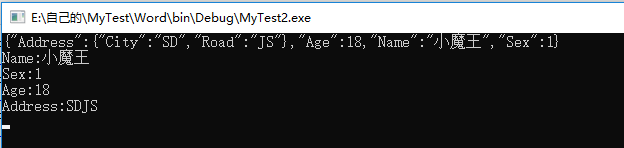
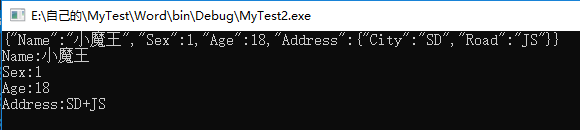
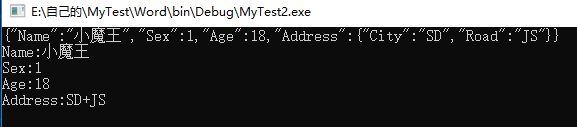
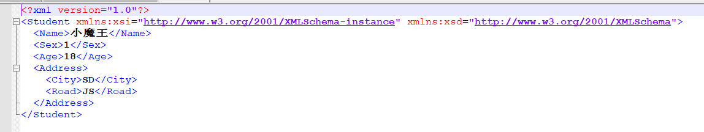
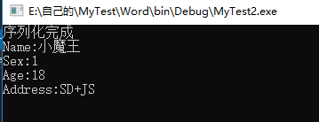

今天我利用这篇文章给大家讲解一下C#中的序列化与反序列化。这两个概念我们再开发中经常用到，但是我们绝大部分只用到了其中的一部分，剩下的部分很多开发人员并不清楚，甚至可以说是不知道。因此我希望通过这篇文章能让大家对序列化和反序列化的知识有更进一步的掌握。废话不多说，开始进入正题。
一、什么是序列化/反序列化
在所有的开发语言中都存在序列化和反序列化这个概念，所谓的序列化就是把一个对象信息转化为一个可以持久存储的数据形式，经过转化后就可以方便的保存和传输了，因此序列化主要用于平台之间的通讯。由于序列化我们可以反推出所谓的反序列化就是将持久存储的数据还原为对象。
二、C#中的序列化/反序列化
在C#中我们经常会对Json和Xml进行序列化和反序列化，但是还存在一种序列化/反序列化，那就是将对象序列化为二进制文件，将二进制文件反序列化为对象。下面我会对这三种序列化和反序列化进行解释。
1、Json
Json的英文全称是JavaScript Object Notation，是一种轻量级的数据交换格式，完全独立于语言的文本格式，易于人阅读和编写，同时也易于机器解析和生成。Json是目前互联网中主流的交换格式，同时也是很多开发语言配置文件的主流格式。
在.Net中存在两个类对Json进行处理，分别是DataContractJsonSerializer和JavaScriptSerializer，这两种类的功能基本一致。DataContractJsonSerializer位于命名空间 System.Runtime.Serialization.Json下，他的特点是必须用DatContract以及DataMember属性标记成员。JavaScriptSerializer位于命名空间System.Web.Script.Serialization下，通过名字和他所在的命名空间我们可以得知他主要用在网络通信中，他可以序列化任何类型的对象。同样.Net中也存在一个强大的第三方Json序列化/反序列化库 Newtonsoft.Json，他比前两个类用起来方便很多。下面我们对这三个序列化/反序列化的方式分别进行讲解。
（1）DataContractJsonSerializer
首先我们需要在项目引用DataContractJsonSerializer所在的命名空间，这里主要注意的是我们不仅要在项目中添加System.Runtime.Serialization还需要添加引用System.ServiceModel.Web。将这两个命名空间添加到命名空间后就可以在代码中进入DataContractJsonSerializer的命名空间了。
using System.Runtime.Serialization;
using System.Runtime.Serialization.Json;
引入命名空间后，我们开始编写序列化类
1 [DataContract]
2 class Student
3 {
4 [DataMember]
5 public string Name { get; set; }
6 [DataMember]
7 public int Sex { get; set; }
8 [DataMember]
9 public int Age { get; set; }
10 [DataMember]
11 public Address Address { get; set; }
12 }
13
14 [DataContract]
15 class Address
16 {
17 [DataMember]
18 public string City { get; set; }
19 [DataMember]
20 public string Road { get; set; }
21 }在上述代码中，我们看到类的头部添加了DataContract特性，以及在类的属性上也增加了DataMenber特性，一旦一个类被声明为DataCOntract时，就代表着该类可以被序列化，并且可以在服务端和客户端传输。只有声明为DataContract的类型的对象可以被传送，而且只有成员属性会被传送，成员方法不会被传送。默认情况下类中的所有成员属性都不会被序列化传输出去，如果需要将成员数据传输出去就需要在属性头部加入DataMember。
下面我们就利用DataContractJsonSerializer对对象进行序列化和反序列化，代码如下：
1 class Program
2 {
3 static void Main()
4 {
5 #region 对象转Json字符串
6
7 var student = new Student
8 {
9 Name = "小魔王",
10 Age = 18,
11 Sex = 1,
12 Address = new Address
13 {
14 City = "SD",
15 Road = "JS"
16 }
17 };
18
19 //利用WriteObject方法序列化Json
20 DataContractJsonSerializer serializer = new DataContractJsonSerializer(typeof(Student));
21 var stream = new MemoryStream();
22 serializer.WriteObject(stream, student);
23 var bytes = new byte[stream.Length];
24 stream.Position = 0;
25 stream.Read(bytes, 0, (int)stream.Length);
26 var strJson = Encoding.UTF8.GetString(bytes);
27 Console.WriteLine(strJson);
28
29 #endregion
30
31 #region Json字符串转对象
32
33 stream = new MemoryStream(Encoding.UTF8.GetBytes(strJson));
34 student = (Student)serializer.ReadObject(stream);
35 Console.WriteLine($"Name:{student.Name}");
36 Console.WriteLine($"Sex:{student.Sex}");
37 Console.WriteLine($"Age:{student.Age}");
38 Console.WriteLine($"Address:{student.Address.City}{student.Address.Road}");
39
40 #endregion
41
42 Console.ReadKey();
43 }
44 }
45
46 [DataContract]
47 class Student
48 {
49 [DataMember]
50 public string Name { get; set; }
51 [DataMember]
52 public int Sex { get; set; }
53 [DataMember]
54 public int Age { get; set; }
55 [DataMember]
56 public Address Address { get; set; }
57 }
58
59 [DataContract]
60 class Address
61 {
62 [DataMember]
63 public string City { get; set; }
64 [DataMember]
65 public string Road { get; set; }
66 }结果：

（2）JavaScriptSerializer
我们利用前面定义的类，来看一下JavaScriptSerializer的使用方法，我们将前面定义的类中的DataContract和DataMember都去掉。我们如果要使用JavaScriptSerializer只需要引入System.Web.Script.Serialization命名空间即可。下面我们就利用JavaScriptSerializer对象进行序列化和反序列化，代码如下：
1 static void Main()
2 {
3 #region 对象转Json字符串
4
5 var student = new Student
6 {
7 Name = "小魔王",
8 Age = 18,
9 Sex = 1,
10 Address = new Address
11 {
12 City = "SD",
13 Road = "JS"
14 }
15 };
16
17 //初始化
18 JavaScriptSerializer serializer = new JavaScriptSerializer();
19 var strJson = serializer.Serialize(student);
20 Console.WriteLine(strJson);
21 #endregion
22
23 #region Json字符串转对象
24
25 student = serializer.Deserialize<Student>(strJson);
26 Console.WriteLine($"Name:{student.Name}");
27 Console.WriteLine($"Sex:{student.Sex}");
28 Console.WriteLine($"Age:{student.Age}");
29 Console.WriteLine($"Address:{student.Address.City}+{student.Address.Road}");
30 #endregion
31
32 Console.ReadKey();
33 }
34 }
35
36 class Student
37 {
38 public string Name { get; set; }
39 public int Sex { get; set; }
40 public int Age { get; set; }
41 public Address Address { get; set; }
42 }
43
44 class Address
45 {
46 public string City { get; set; }
47 public string Road { get; set; }
48 }结果：

（3）Newtonsoft.Json
NewtonSoft.Json功能有很多，除了序列化和反序列化之外，还有 Linq To Json、Json Path、XML support等，我们这篇文章之讲解其中的序列化和反序列化，使用NewtonSoft.Json前首先我们需要在nuget中搜索并安装，安装完成后引入NewtonSoft.Json，下面我么你来看一下具体使用：
1 class Program
2 {
3 static void Main()
4 {
5 #region 对象转XML字符串
6
7 var student = new Student
8 {
9 Name = "小魔王",
10 Age = 18,
11 Sex = 1,
12 Address = new Address
13 {
14 City = "SD",
15 Road = "JS"
16 }
17 };
18
19 //初始化
20 var strJson = JsonConvert.SerializeObject(student);
21 Console.WriteLine(strJson);
22 #endregion
23
24 #region Json字符串转对象
25
26 student = JsonConvert.DeserializeObject<Student>(strJson);
27 Console.WriteLine($"Name:{student.Name}");
28 Console.WriteLine($"Sex:{student.Sex}");
29 Console.WriteLine($"Age:{student.Age}");
30 Console.WriteLine($"Address:{student.Address.City}+{student.Address.Road}");
31 #endregion
32
33 Console.ReadKey();
34 }
35 }
36
37 class Student
38 {
39 public string Name { get; set; }
40 public int Sex { get; set; }
41 public int Age { get; set; }
42 public Address Address { get; set; }
43 }
44
45 class Address
46 {
47 public string City { get; set; }
48 public string Road { get; set; }
49 }结果：

从代码中我们可以看到 NewtonSoft.Json序列化和反序列化更加简单，简单到只需要一行代码就可以完成。
2、XML
在Json还没有出现之前，Xml是互联网上常用的数据交换格式和规范。.net中提供XmlSerializer类将对象序列化为XML和将XML反序列化为对象，使用方法是首先实例化，然后调用序列化/反序列化方法。下面我们依然使用最开始定义的那个类，来看看XmlSerializer的使用。使用前我们需要引入using System.Xml.Serialization命名空间。
具体序列化与反序列化方法如下：
1 class Program
2 {
3 static void Main()
4 {
5 #region 对象转XML字符串
6
7 var student = new Student
8 {
9 Name = "小魔王",
10 Age = 18,
11 Sex = 1,
12 Address = new Address
13 {
14 City = "SD",
15 Road = "JS"
16 }
17 };
18
19 //初始化
20 XmlSerializer xmlSerializer = new XmlSerializer(typeof(Student));
21 using (var fs = new FileStream(@"F:\123.xml", FileMode.OpenOrCreate))
22 {
23 xmlSerializer.Serialize(fs, student);
24 }
25 Console.WriteLine("序列化完成");
26 #endregion
27
28 #region Json字符串转对象
29
30 using (var fs = new FileStream(@"F:\123.xml", FileMode.OpenOrCreate))
31 {
32 //XmlReader xmlReader = new XmlTextReader(fs);
33 //student = xmlSerializer.Deserialize(xmlReader) as Student;
34 student = xmlSerializer.Deserialize(fs) as Student;
35 }
36 Console.WriteLine($"Name:{student.Name}");
37 Console.WriteLine($"Sex:{student.Sex}");
38 Console.WriteLine($"Age:{student.Age}");
39 Console.WriteLine($"Address:{student.Address.City}+{student.Address.Road}");
40 #endregion
41
42 Console.ReadKey();
43 }
44 }
45
46 public class Student
47 {
48 public string Name { get; set; }
49 public int Sex { get; set; }
50 public int Age { get; set; }
51 public Address Address { get; set; }
52 }
53
54 public class Address
55 {
56 public string City { get; set; }
57 public string Road { get; set; }
58 }结果：


3、二进制
序列化为二进制，在实际开发中真有不少用到，但是我觉得还是有必要讲一讲，他的使用方法和XmlSerializer序列化/反序列化类似，首先实例化，然后调用序列化/反序列化方法。在进行序列化/反序列化前，首先引入命名空间System.Runtime.Serialization.Formatters.Binary，同时修改对象类如下：
1 [Serializable]
2 public class Student
3 {
4 public string Name { get; set; }
5 public int Sex { get; set; }
6 public int Age { get; set; }
7 public Address Address { get; set; }
8 }
9
10 [Serializable]
11 public class Address
12 {
13 public string City { get; set; }
14 public string Road { get; set; }
15 }上述代码中我们在类的头部加入了Serializable特性，这代表着整个类对象都需要序列化，如果我们不需要序列化其中的某个属性的话，只需要在该属性上加上NonSerialized特性即可，下面我们来看一下序列化/反序列化代码：
1 class Program
2 {
3 static void Main()
4 {
5 #region 对象转XML字符串
6
7 var student = new Student
8 {
9 Name = "小魔王",
10 Age = 18,
11 Sex = 1,
12 Address = new Address
13 {
14 City = "SD",
15 Road = "JS"
16 }
17 };
18
19 BinaryFormatter binaryFormatter = new BinaryFormatter();
20 string fileName = Path.Combine(@"F:\", @"123.txt");
21 using (var stream = new FileStream(fileName, FileMode.OpenOrCreate))
22 {
23 binaryFormatter.Serialize(stream, student);
24 }
25 Console.WriteLine("序列化完成");
26 #endregion
27
28 #region 字符串转对象
29
30 using (var fs = new FileStream(@"F:\123.txt", FileMode.OpenOrCreate))
31 {
32 student = binaryFormatter.Deserialize(fs) as Student;
33 }
34 Console.WriteLine($"Name:{student.Name}");
35 Console.WriteLine($"Sex:{student.Sex}");
36 Console.WriteLine($"Age:{student.Age}");
37 Console.WriteLine($"Address:{student.Address.City}+{student.Address.Road}");
38 #endregion
39
40 Console.ReadKey();
41 }
42 }
43
44 [Serializable]
45 public class Student
46 {
47 public string Name { get; set; }
48 public int Sex { get; set; }
49 public int Age { get; set; }
50 public Address Address { get; set; }
51 }
52
53 [Serializable]
54 public class Address
55 {
56 public string City { get; set; }
57 public string Road { get; set; }
58 }这篇文章详细的讲述了.Net中序列化与反序列化的相关知识和使用，序列化和反序列化的相关知识还有很多，这里所讲的都是开发中常用到的。好了，今天的知识就分享到这里了。